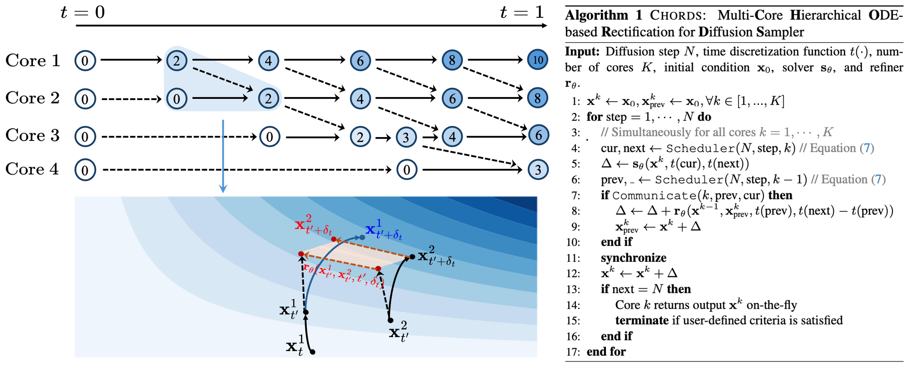
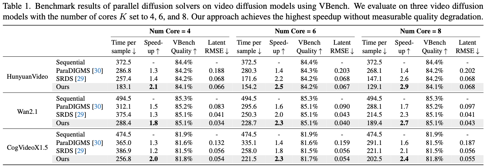
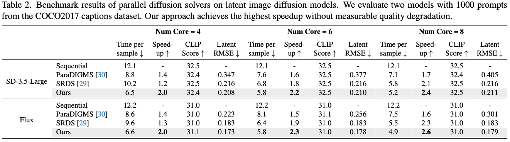

Diffusion-based generative models have become dominant generators of high-fidelity images and videos but remain limited by their computationally expensive inference procedures. Existing acceleration techniques either require extensive model retraining or compromise significantly on sample quality.
This paper explores a general, training-free, and model-agnostic acceleration strategy via multi-core parallelism. Our framework views multi-core diffusion sampling as an ODE solver pipeline, where slower yet accurate solvers progressively rectify faster solvers through a theoretically justified inter-core communication mechanism. This motivates our multi-core training-free diffusion sampling accelerator, CHORDS, which is compatible with various diffusion samplers, model architectures, and modalities.
Through extensive experiments, CHORDS significantly accelerates sampling across diverse large-scale image and video diffusion models, yielding up to 2.1x speedup with four cores, improving by 50% over baselines, and 2.9x speedup with eight cores, all without quality degradation. This advancement enables CHORDS to establish a solid foundation for real-time, high-fidelity diffusion generation.

Our approach leverages at core an operation named "Multi-core Rectification" (as depicted in the left figure) that refines the latents of the faster cores (the cores with larger core index) with the slower but more accurate ones (those with smaller core index), with necessary theoretical justification. With such technique, we are able to remarkably streamline diffusion generation with multi-core parallelism without measurable quality degradation. We also establish a general pipeline recipe that optimally avoids bubbles and permits efficient information propagation across cores. See Algorithm 1 for more details.


CHORDS offers significant diffusion sampling speedup across a diverse range of video diffusion (Table 1) and image diffusion (Table 2) models consistently across 4 to 8 cores, while not sacrificing sample quality, as evidenced by VBench Quality Score and CLIP Score. Please refer to our paper for more detailed results and ablation studies.
@inproceedings{han2025chords,
author = {Han, Jiaqi and Ye, Haotian and Li, Puheng and Xu, Minkai and Zou, James and Ermon, Stefano},
title = {CHORDS: Diffusion Sampling Accelerator with Multi-core Hierarchical ODE Solvers},
booktitle = {Proceedings of the IEEE/CVF International Conference on Computer Vision (ICCV)},
year = {2025}
}